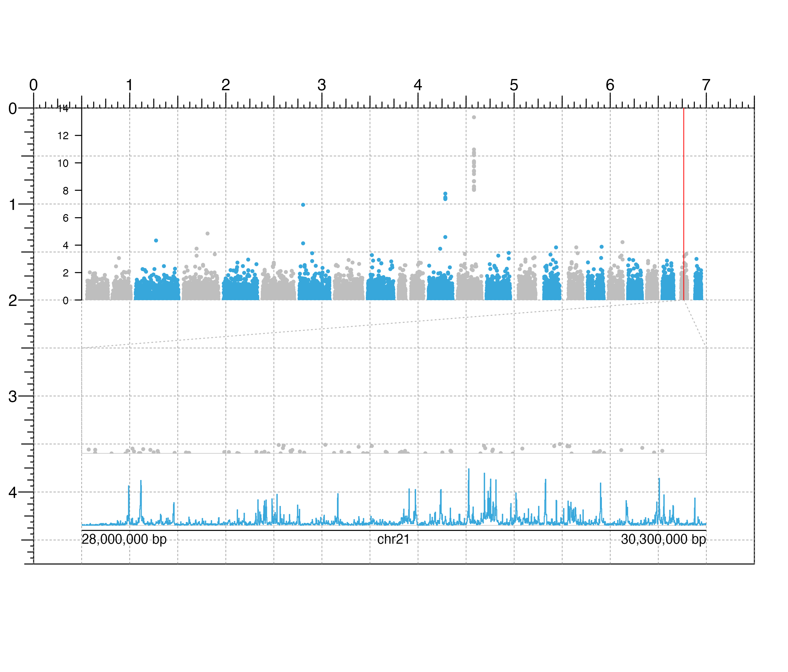
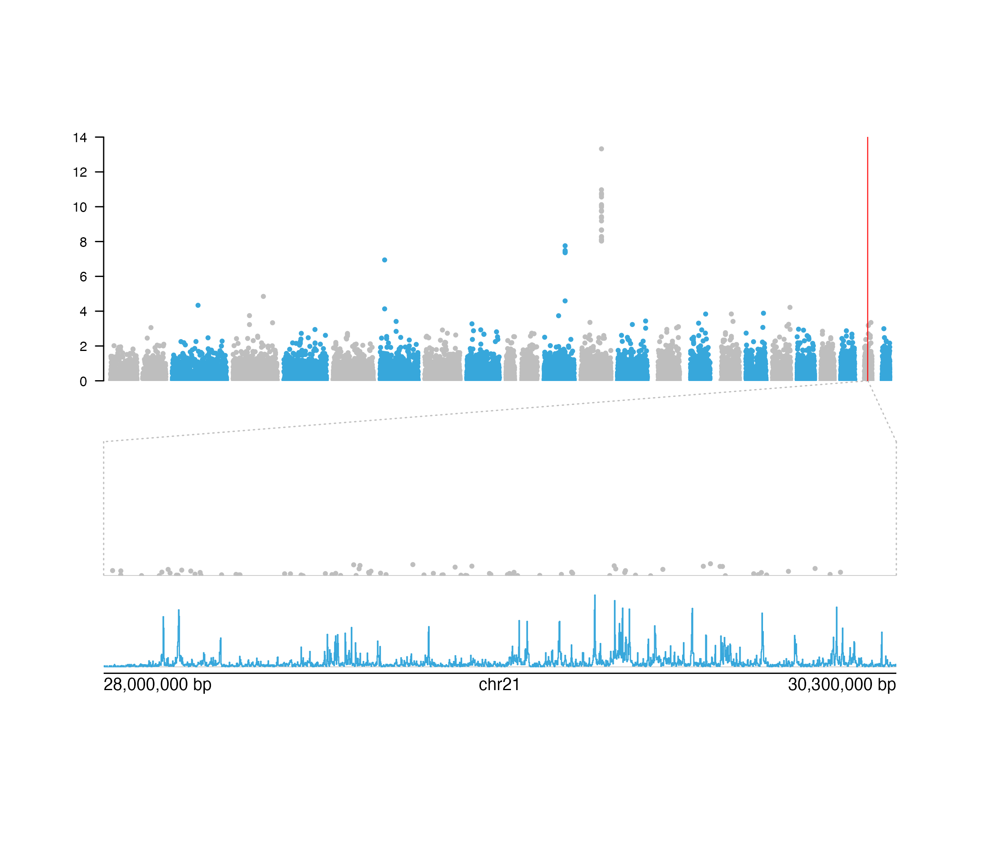

R/bbAnnoZoomLines.R
bbAnnoZoomLines.RdAnnotates zoom lines for a specified genomic region of a BentoBox plot
bbAnnoZoomLines( plot, chrom, chromstart = NULL, chromend = NULL, y0, x1 = NULL, y1, extend = 0, default.units = "inches", linecolor = "grey", lty = 2, params = NULL, ... )
| plot | Input BentoBox plot to annotate genomic region zoom lines from. |
|---|---|
| chrom | Chromosome of region to draw zoom lines from, as a string. |
| chromstart | Integer start position on chromosome to draw zoom lines from. |
| chromend | Integer end position on chromosome to draw zoom lines from. |
| y0 | A numeric vector or unit object indicating the starting y-values of the zoom line segments. If two values are given, the first value will correspond to the left zoom line and the second value will correspond to the right zoom line. |
| x1 | A numeric vector or unit object indicating the stopping x-values of the zoom line segments. If two values are given, the first value will correspond to the left zoom line and the second value will correspond to the right zoom line. If NULL, straight lines from zoomed genomic region will be drawn. |
| y1 | A numeric vector or unit object indicating the stopping y-values of the zoom line segments. If two values are given, the first value will correspond to the left zoom line and the second value will correspond to the right zoom line. |
| extend | A numeric vector or unit object indicating the length
to extend straight lines from each end
of the zoom line segments. If two values are given, the first value
will correspond to the top extension length
and the second value will correspond to the bottom extension length.
Default value is |
| default.units | A string indicating the default units to use
if |
| linecolor | A character value specifying zoom line color.
Default value is |
| lty | A numeric specifying zoom line type.
Default value is |
| params | An optional bbParams object containing relevant function parameters. |
| ... | Additional grid graphical parameters. See gpar. |
Returns a bb_zoom object containing
relevant genomic region, placement, and grob information.
## Plot and place a Manhattan plot library(BentoBoxData) library("TxDb.Hsapiens.UCSC.hg19.knownGene") data("hg19_insulin_GWAS") manhattanPlot <- bbPlotManhattan( data = hg19_insulin_GWAS, assembly = "hg19", fill = c("grey", "#37a7db"), sigLine = FALSE, col = "grey", lty = 2, range = c(0, 14), x = 0.5, y = 0, width = 6.5, height = 2, just = c("left", "top"), default.units = "inches" )#>bbAnnoYaxis( plot = manhattanPlot, at = c(0, 2, 4, 6, 8, 10, 12, 14), axisLine = TRUE, fontsize = 8 )#>## Annotate zoom lines for a region on chromsome 21 zoomRegion <- bbParams( chrom = "chr21", chromstart = 28000000, chromend = 30300000, assembly = "hg19" ) bbAnnoZoomLines( plot = manhattanPlot, params = zoomRegion, y0 = 2, x1 = c(0.5, 7), y1 = 2.5, extend = c(0, 1.1), default.units = "inches", lty = 3 )#>## Annotate highlight region for zoom region bbAnnoHighlight( plot = manhattanPlot, params = zoomRegion, y = 2, height = 2, just = c("left", "bottom"), default.units = "inches", fill = "red", alpha = 0.8 )#>## Plot Manhattan plot data and signal track under zoom lines manhattanPlotZoom <- bbPlotManhattan( data = hg19_insulin_GWAS, fill = "grey", sigLine = FALSE, baseline = TRUE, params = zoomRegion, range = c(0, 14), x = 0.5, y = 2.6, width = 6.5, height = 1 )#>data("IMR90_ChIP_H3K27ac_signal") signalPlot <- bbPlotSignal( data = IMR90_ChIP_H3K27ac_signal, params = zoomRegion, range = c(0, 45), x = 0.5, y = "b0.1", width = 6.5, height = 0.65, just = c("left", "top"), default.units = "inches" )#>## Plot genome label bbPlotGenomeLabel( chrom = "chr21", chromstart = 28000000, chromend = 30300000, assembly = "hg19", x = 0.5, y = 4.4, length = 6.5, default.units = "inches" )#>